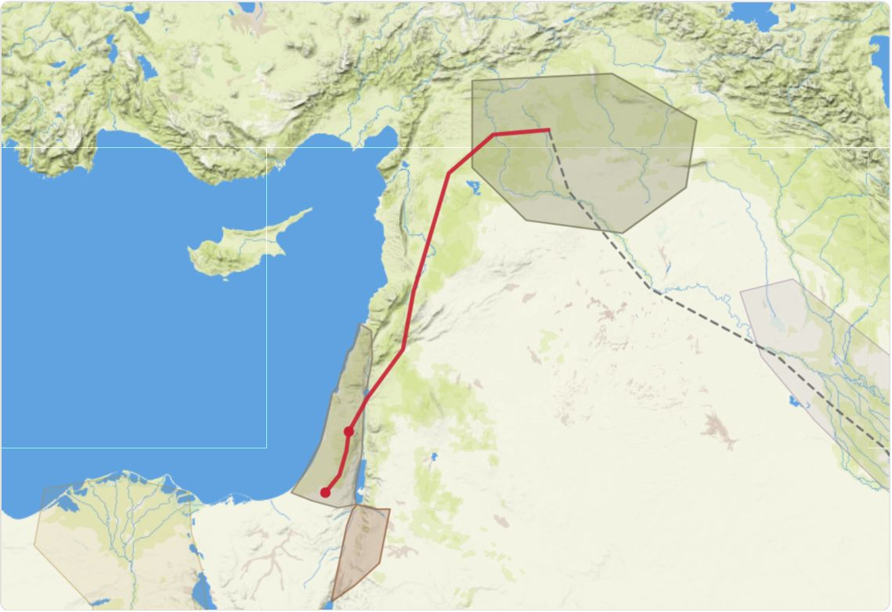
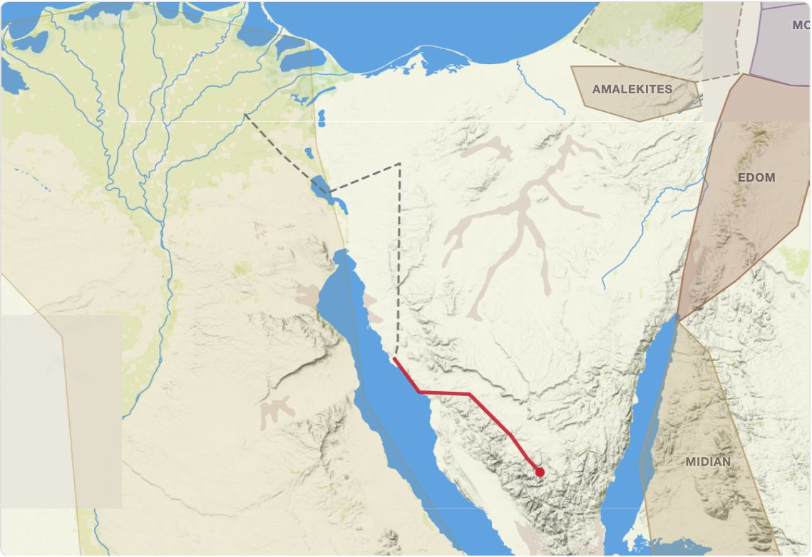
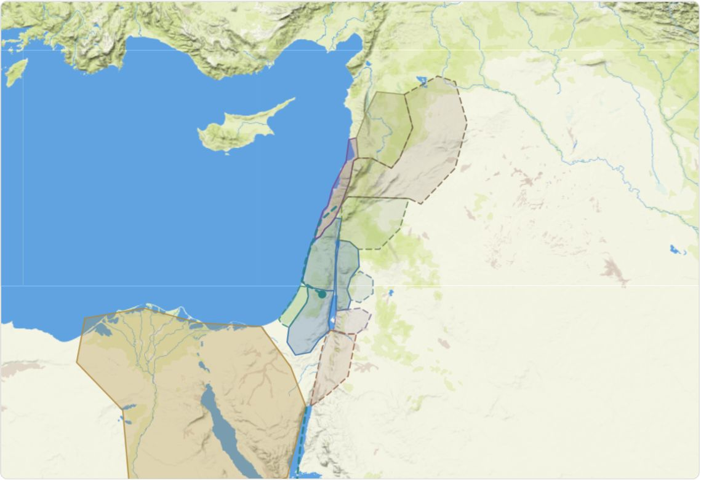
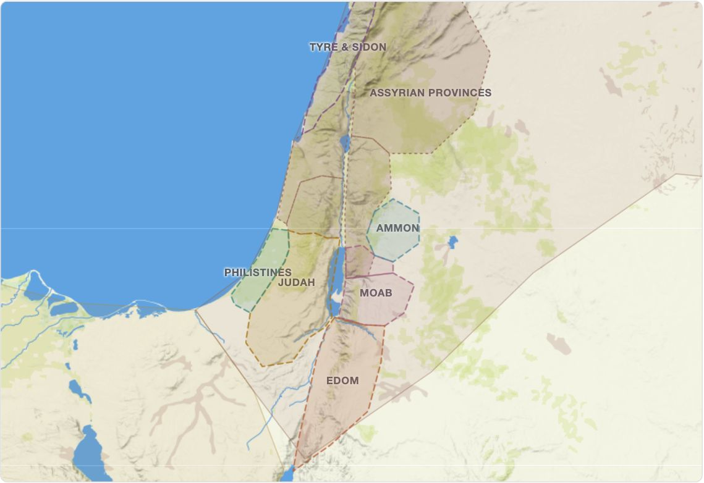
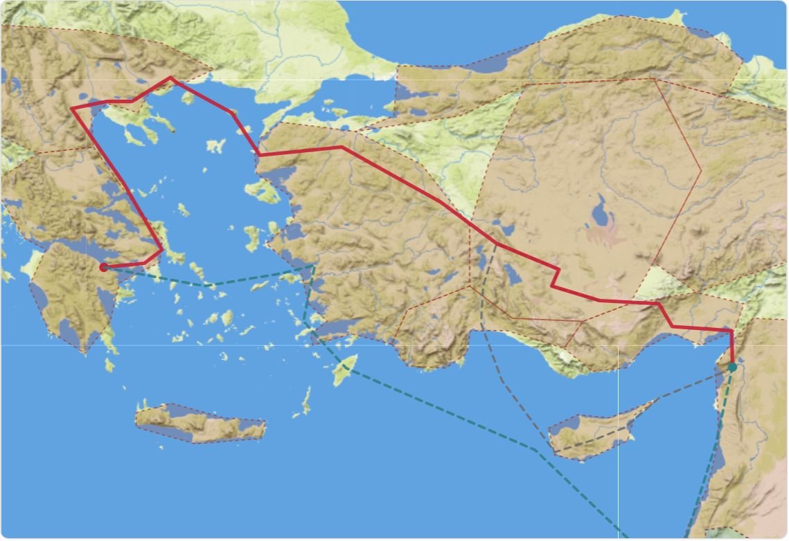

నేటి వాక్యము
కీర్తనలు 119:105
ఈ రోజు ఈ వాక్యాన్ని చదివి ధ్యానించండి
ఉచిత బైబిలు అధ్యయన వనరులు
దేవుని వాక్యంలోని సంగతులు ఎక్కడ జరిగాయో, ఎప్పుడు జరిగాయో, అన్నీ ఎలా కలిసి సరిపోతాయో చూడడానికి సహాయపడే ఇంటరాక్టివ్ పటములు, కాలరేఖలు, మార్గదర్శకాలు.
నేటి వాక్యము
కీర్తనలు 119:105
ఈ రోజు ఈ వాక్యాన్ని చదివి ధ్యానించండి
బైబిలు కాలరేఖ & పటములు
అబ్రాహాము పిలుపు నుండి రోమాలో పౌలు వరకు ఐదు యుగాలు. దాని ఇంటరాక్టివ్ పటం, కాలరేఖ తెరవడానికి ఒకదాన్ని ఎంచుకోండి. ప్రస్తుతం “యేసు & ఆది సంఘము” తెలుగులో ఉంది; మిగిలినవి త్వరలో వస్తాయి.

01సుమారు క్రీ.పూ. 2166–1446
ఊరు నుండి ఐగుప్తు వరకు: అబ్రాహాముకు దేవుని వాగ్దానం, ఇస్సాకు, యాకోబు, యోసేపుల ద్వారా కొనసాగింది.

02సుమారు క్రీ.పూ. 1526–1370
ఐగుప్తు నుండి బయటకు, సముద్రం గుండా సీనాయికి, నలుబది సంవత్సరాలు అరణ్యములో, తర్వాత కనానులోకి.

03సుమారు క్రీ.పూ. 1380–931
దెబోరా, గిద్యోను, సంసోను, రూతు, సమూయేలు, తర్వాత సౌలు, దావీదు, సొలొమోను కట్టిన దేవాలయం.

04క్రీ.పూ. 931–430
రెండు రాజ్యాలు, వాటి రాజులు, దేవుడు పంపిన ప్రవక్తలు, బబులోను చెర, తిరిగి రాక.

05సుమారు క్రీ.పూ. 5 – క్రీ.శ. 70
యేసు జీవితం, అపొస్తలుల కార్యములలోని సంఘం, అంతియొకయ నుండి రోమా వరకు పౌలు ప్రయాణాలు.
సంఘటన
అబ్రాము పిలుపు
క్రీ.పూ. 2091 · అబ్రాము వయస్సు 75 లెక్కించినది
ఆదికాండము 12:1-5హెబ్రీ 11:8
ఇది ఎలా పనిచేస్తుంది
అధ్యయనానికి మరిన్ని మార్గాలు
అనువాదాల మార్గదర్శి ప్రస్తుతం ఇంగ్లీషులో ఉంది.
ఆదాము నుండి యేసు వరకు 140 మంది: నోవహు, అబ్రాహాము, పండ్రెండు గోత్రములు, రూతు, దావీదు, యూదా రాజులు.
వంశవృక్షము చూడండి66 గ్రంథాలు ఒక్క చూపులో: ఎవరు వ్రాశారు, ఎప్పుడు, దేని గురించి, ఒక్కొక్కటి క్రీస్తును ఎలా చూపిస్తుంది.
గ్రంథాలను చూడండిపదానికి పదమా, భావానికి భావమా, లేక భావానువాదమా? 20 ఇంగ్లీషు బైబిళ్లను పరిశీలించి ఏ భాగాన్నైనా పోల్చి చూడండి.
అనువాదాలు పోల్చండి (ఇంగ్లీషు)కొన్ని ప్రశ్నలకు జవాబివ్వండి; మీరు చదివే విధానానికి సరిపోయే అనువాదాన్ని, ప్రతిని మేము సూచిస్తాము.
క్విజ్ మొదలుపెట్టండిబైబిలు అనువాదాలు, స్టడీ బైబిళ్లు, జర్నలింగ్ బైబిళ్లు, తెలుగు బైబిళ్ల గురించి సరళమైన మార్గదర్శకాలు.
మార్గదర్శకాలు చూడండిఆశా బుక్స్ బ్లాగ్ నుండి (ఇంగ్లీషులో)
తెలుగు బైబిళ్లు, స్టడీ బైబిళ్లు, భారతీయ భాషల బైబిళ్లు. భారతదేశమంతటా పంపిణీ.